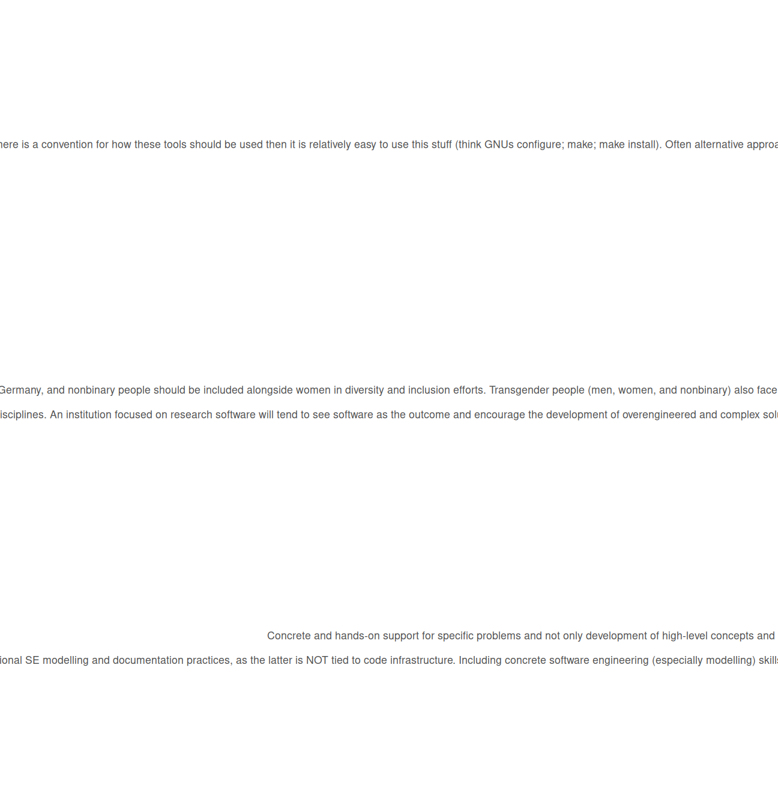

60 org7de
61 Do you have any further suggestions or wishes regarding the conception of a research software institution in Germany?
Question code: org7de
Detected type: Single response or free text
Respondents answering: 33

| Response | Count | Percent |
|---|---|---|
| - Zur Verfügungstellung von Repositories zur Ablage der Software und Dokumentation - Unterstützung bei Lizenrechtlichen Fragestellungen | 1 | 3.0% |
| A decentralized network with a central organizer is the key. We are also organizing something similar at BAM, Berlin. I will probably be the leader of this, so I am interested and will probably reach out to FutuRSI. | 1 | 3.0% |
| Aufsuchend arbeiten statt unbekannte und dann selten genutzte Beratungsangebote schaffen. Also jeden Monat ein anderes Forschungsinstitut/-einrichtung besuchen. Es gibt schon viel zu viele Mailverteiler oder online Seminare, wo man immer wieder die gleichen drei Gestalten trifft. | 1 | 3.0% |
| Central aspects of SE are modelling practices, project management, and agile SE. I feel like these skills are incredibly neglected in the RSE context and there is an unhealthy focus on code and coding practice. This leads to the constant question of how to create sustainable code, which is not the same as sustainable software, as well as the inane question of how to publish software code as scientific output instead of classic software pubiishing through traditional SE modelling and documentation practices, as the latter is NOT tied to code infrastructure. Including concrete software engineering (especially modelling) skills would provide RSEs a way to actually publish their work in relevant journals. This alone could create a way to stabilize carreer paths. Before institutionalizing beaurocratic infrastructure, it makes sense to at least attempt to implement correct software engineering practice on a low level with sensible engineering modelling and thus documentation practice and see if this leads to sustainable research software, RSE publications, and sustainable carreer paths. | 1 | 3.0% |
| Concrete and hands-on support for specific problems and not only development of high-level concepts and standards. Offer help to update institutions and the routine daily workflows for moving from closed, proprietary, un-FAIR to an open source software and public data infrastrure. Develop and offer concrete workflows and solutions (incl. software) to meet the demand of funding agencies that actually can be adopted and re-used. (In contrast to the nebulous and unhelpful “you have to introduce a data repository and a metadata scheme / ontology for your field”.) | 1 | 3.0% |
| Consider what you want to achieve. Ideally, we write more open source, well structured and stable software codes that get distributed and enhanced. That depends on individual contributors (ICs), not a central organization. However, people need to realize that this effort is worth their time, that it pays off in the long term. Make sure that is clear and provide them with tools to get started. | 1 | 3.0% |
| Coordination and collaboration with the carpentries etc; Please consider the wide variety of research software needs, different levels of expertise. A German research software institution should not be a software developing institution, but an institution to help RSEs do the software development Please don’t overfocus on AI | 1 | 3.0% |
| Don’t federalize it to death | 1 | 3.0% |
| Entwicklung von Forschungssoftware ist häufig weniger ein Problem als die langfristige Pflege. Geld/Stellen nur für nötige Sicherheitsupdates nicht mal sinnolle Weiterentwicklungen, sind schwer zu verstetigen oder neu einzuwerben. Beratung und Support in der Richtung sehe ich als sinnvoll an. | 1 | 3.0% |
| Es sollte ein gut durchsuchbares Archiv existierender Forschungssoftware und ihrer Dokumentation geben. | 1 | 3.0% |
| Förderung niedrigschwelliger, informeller Vernetzungsmöglichkeiten (etwa Online-Stammtische und Präsenzworkshops wie Hackathons), die verhindern, dass ich mich in meiner vor Ort sehr spezialisierten Position bei Problemen alleingelassen fühle | 1 | 3.0% |
| Hauptsächlich Vernetzung und Koordination. Es braucht an vielen Stellen das Rad nicht neu erfunden werden, aber es ist zu wenig bekannt, wo Entwicklungen bereits gemacht wurden. Daher ist Koordination/Matchmaking wichtig. Bevorzugt ein Hub&Spoke-Model, sodass sowohl der Überblick und (Politische) Advocacy möglich ist, als auch der Kontakt zu den einzelnen RSE-Gruppen behalten wird. Ansonsten sehe ich die Gefahr, dass man sich entweder im täglichen Klein-Klein verliert (nur lokale Gruppen), oder den Kontakt und die Bedürfnisse von RSEs aus den Augen verliert. | 1 | 3.0% |
| Highlight the importance of the entire software development process (including: project management, requirements management, documentation, UI/UX) and find ways to support RSEs or RSE teams in implementing it. | 1 | 3.0% |
| I believe that the concept of a research software institution in Germany is fundamentally flawed. Research software engineers need to be deeply embedded in the disciplines that they serve to focus on meeting the needs of researchers in those disciplines. An institution focused on research software will tend to see software as the outcome and encourage the development of overengineered and complex solutions to researchers’ needs. I have encountered many scientists struggling to work with software that follows so-called best practices, and I have likewise seen fellow research software engineers proposing solutions simply because they sound cool or use the currently hyped technology. We need to find better ways to support small research software that evolves organically within a community of practice, and a federal research software institution is not that. | 1 | 3.0% |
| I have encountered cases (jobs or fellowships) where female candidates are strongly encouraged to apply or prioritized, but I have never seen this extend to transgender and nonbinary people, and it should. Nonbinary is a legally recognized gender in Germany, and nonbinary people should be included alongside women in diversity and inclusion efforts. Transgender people (men, women, and nonbinary) also face challenges as a result of others’ perception of their gender and should also be included. Finally, it seems like a small thing, but wherever documents are trying to use inclusive language, the English version should not indicate “he or she” and so on, but rather singular they and them, which is applicable to all genders. I’ve noticed it is difficult to change wording once it is established in official documents, which is why I am bringing this to your attention so early. | 1 | 3.0% |
| I think freedom of workflow is important. Nobody should be forced/limited by things like operating system, coding environment, laptop hardware. These things are individual decisions made by the employee. They will take decisions that depend on the projects that they are planning to work on. I think freedom of project specific decisions are also important. Things like coding guidelines should not be established globally, across all projects. A team needs the freedom to pick the technology that fits the projects needs. From here the need/improvement of in-house technologies can be deduced. In general in-house technologies should be favored, in order to test and improve them. An example of collaboration: Helmholtz Zentrum Dresden is developing the alpaka library, which is a great library when dealing with high performance computing situations, like software for physics simulation. | 1 | 3.0% |
| I think funding and recognition for research software development is key, as well as permanent positions for these tasks at individual research facilities. | 1 | 3.0% |
| I’m afraid government involvement will jeopardize any relevant effort. | 1 | 3.0% |
| If such an institution were to be set up, it needs to be well publicised not only to the other RSEs but all faculties across the various research insitutes in Germany, which will be a tough job to achieve. | 1 | 3.0% |
| IMHO academic career teaches researchers to work towards short to midterm goals, making the best of what they find. Thus many researchers need to learn system engineering or long term strategic oriented project planning. Thus I see that Research software engineering institution will face the challenge to learn from the researchers what they really need and to get them to embrace solutions already out there (e.g. many research software embeds job management into their package instead of blending into existing job execution or analysis facilities solutions). So founding an institution can be helpful, but it needs to act somehow like a emperor traveling through his country. An other option could be to place them close to attraction research centers were perspective interaction researcher pass by anyway. | 1 | 3.0% |
| It should give awards to researchers developing software and improve their visibility by other means, since at the moment this large part of their work does not get deserved attention. | 1 | 3.0% |
| Many computing centers and research institutions actually already offer trainings and support and workshops. So any new institution should coordinate with them. | 1 | 3.0% |
| Multiple Aspects: 1. Offer Trainings for the People developing Software 2. Offer Trainings to become the Research Software Expert in my company/institute/location to teach others to teach others | 1 | 3.0% |
| Never really thought about it, but now that you bring it to my attention, it is something I personally wouldn’t mind being involved in. | 1 | 3.0% |
| One of the issues I see is the regular appearance of new methods, conventions and technologies. Think advances in CMake, GPUs, code packaging, build systems, etc. If there is a convention for how these tools should be used then it is relatively easy to use this stuff (think GNUs configure; make; make install). Often alternative approaches are developed within specific groups and then you can spend days, sometimes even weeks, trying to figure out how that approach is supposed to work. This is one of the most frustrating things because these tools/approaches have nothing to do with the core functionality of the codes, but can take up a lot of time to navigate. The more widely shared and better established the conventions are, the less time people have to waste on figuring this stuff out. | 1 | 3.0% |
| Please do not use “moderated matrix space” without defining it. Thank you. For many fields, we need to improve the undergraduate education. | 1 | 3.0% |
| Please don’t screw it up :-) | 1 | 3.0% |
| RE: primary tasks IMO funding ambitious RSE projects would be the most important role of such an org! There are a lot of opportunities that would have significant impacts on many research projects, but not enough on any individual project to justify being part of that project’s research grant. Also, insuring longevity of popular open source projects is always much needed. Also, as far as setting standards, setting standards particularly for security would be helpful (in addition to quality, metadata, etc. mentioned in this option.) RE: community engagement and knowledge transfer It would be helpful for a central organization to organize/facilitate advanced RSE courses/workshops. For RSEs who interact primarily with researchers to improve their own skills. Similarly for trainer-training, would be more helpful to offer something aimed at folks who are actively teaching technical skills to improve their skills rather than Carpentries-style instructor training which seems more aimed at first-time instructors. As far as training materials, good quality references are increasingly hard to find as everything is overrun with AI slop. Probably would not need to generate new material, but curating high quality, actively maintained, human written reference materials on various topics would be helpful. | 1 | 3.0% |
| Secure long-term funding, model itself STRONGLY after the SSI (taking into account German peculiarities, e.g., federalism), offer long(er)-term jobs for its officers. | 1 | 3.0% |
| See point above (Research Software Directory for Germany, Research Software Engineer directory for Germany (skills and expertise in what, to get connected/find contributors), also support recognition of RSE work and RSE career paths (RSE advocacy), and also especially legal support for working across multiple institutions concerning IP and licensing | 1 | 3.0% |
Only the 30 most frequent of 33 distinct responses are shown.